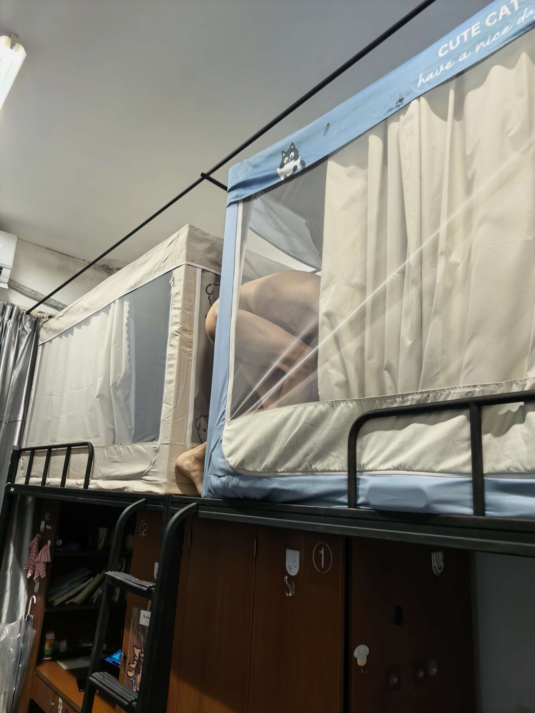
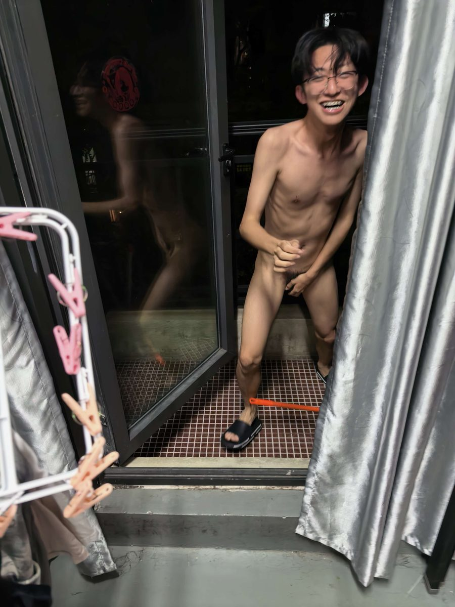

没有毛，也只是猴子的一种样子。
无毛猴不是一个独立的物种，而是指身上大部分毛发缺失的猴子个体。它们可能天生毛发就稀疏， 也可能因为疾病、寄生虫、营养问题或长期压力逐渐掉毛；在猕猴类以及人工饲养的种群中， 都出现过这样的个体。
毛发对猴子来说是一件外套：挡太阳、保暖、隔开蚊虫，也是同类之间互相辨认和示好的信号。 少了这层外套，皮肤就直接暴露在环境里，也因此更容易被人注意到。

-
01
天生的差异
有些个体从出生起毛发就稀疏，属于基因层面的个体差异，本身并不等于生病。
-
02
也可能是后天
皮肤病、寄生虫、营养不良或长期压力，都可能让猴子大面积掉毛，这类情况需要兽医介入。
-
03
需要更多照顾
没有毛发保护，皮肤更容易晒伤、干裂和感染，对温度、湿度也更敏感。
照顾它们，和照顾别的猴子不太一样。
毛发缺失让皮肤成了第一道防线，日常细节比平时更要紧。
-
防晒与遮阴
直射阳光对裸露皮肤伤害很大，活动区域要留出阴凉，外出时间尽量避开正午。
-
保温与控温
毛发是天然的保温层，室温稳定、避开穿堂风和突然的冷热变化比什么都重要。
-
皮肤护理
保持清洁、适度滋润，留意红肿、破皮、结痂和异常抓挠，有变化及时就医。
-
陪伴与社交
猴子是群居动物，梳毛、玩耍、被关注都是日常需要，长期孤立会让状况更糟。
以上是照顾方向的常识提示，具体方案请以兽医的诊断和意见为准。
相册
站长的精选照片，加上大家上传的。
还没有人上传照片，你可以是第一个。
把你拍到的那一张放进来。
上传后所有人都能在相册里看到，照片版权归你所有。